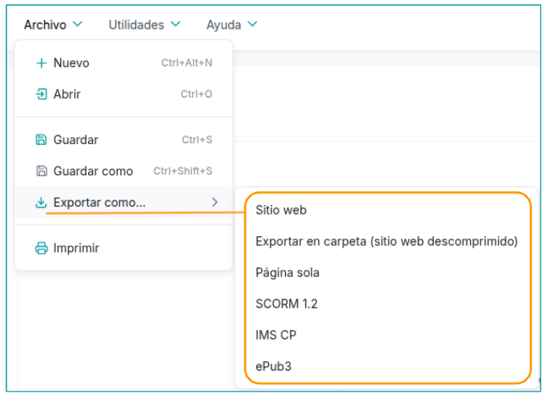
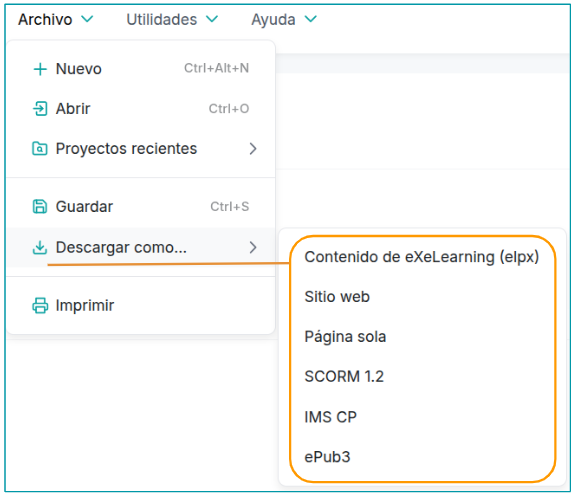
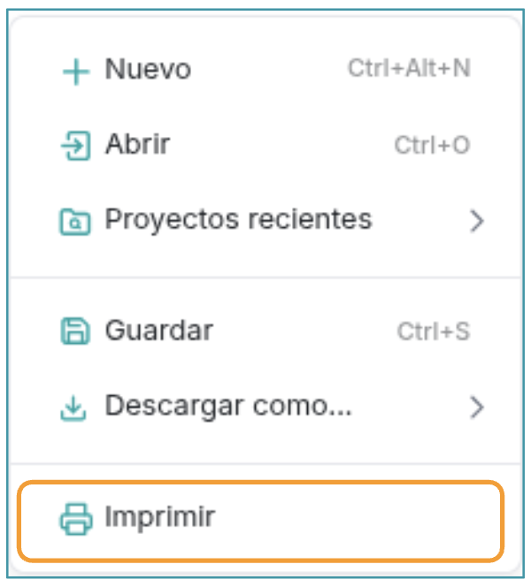

Options of download
eXelearning facilitates the download of the materials created in different formats, which allows to use them in various forms and in different contexts. There are some differences between the desktop version and the online, so we will see them
The Desktop Version
In this case, we will have access to our computer to be able to save the elpx file.We will be able To export the content in various formats:

Export formats available:
- website: generates a compressed file (.zip) that contains the material organized on web pages. To view it, you need to decompress the file and double-click the file by index.htmlLocated at the root of the package.
- Export in folder (decompressed website): export the project files and folders to the folder you indicate from your team.
- Page alone: download a compressed file (.zip) that includes all the content on a single web page. Like in the previous format, it must be decompressed and open the file by index.html.
- by SCORM 1.2: educational standard widely used to publish content on LMS platforms. It includes the content and metadata of the project and allows to track the progress and qualifications of the student. To visualize it, it must be charged on a LMS that supports SCORM, such as Moodle. It is the recommended version for this type of platforms
- The IMS Content Package (IMS CP)Standard compatible with LMS platforms, which includes content and metadata. Unlike SCORM, it does not allow to track progress or collect qualifications.
- by ePub3: Open format for ebooks. Unlike PDF, ePub files do not have a fixed page size, as the content adapts to the screen size of the device. In small screens it will be displayed in more pages, and in big screens, in less.
The Online Version
In this case, we will create our online project and we have several options to download it to our team:

Available download/export formats:
- Content of eXeLearning and elpx: It allows you to download the project as a .elp file, edited directly on eXeLearning. This option is only available in the online version.
- website: generates a compressed file (.zip) that contains the material organized on web pages. To view it, you need to decompress the file and double-click the file by index.htmlLocated at the root of the package.
- Export in folder (decompressed website): export the
- Page alone: download a compressed file (.zip) that includes all the content on a single web page. Like in the previous format, it must be decompressed and open the file by index.html.
- by SCORM 1.2: educational standard widely used to publish content on LMS platforms. It includes the content and metadata of the project and allows to track the progress and qualifications of the student. To visualize it, it must be charged on a LMS that supports SCORM, such as Moodle. It is the recommended version for this type of platforms
- The IMS Content Package (IMS CP)Standard compatible with LMS platforms, which includes content and metadata. Unlike SCORM, it does not allow to track progress or collect qualifications.
- by ePub3: Open format for ebooks. Unlike PDF, ePub files do not have a fixed page size, as the content adapts to the screen size of the device. In small screens it will be displayed in more pages, and in big screens, in less.
Printed
If what we want is to print or save as PDF our resource, we can use the "Print" option that appears in the eXeLearning menu. In the window that opens us by clicking on Print, we will select a printer (in case you want to print it on paper) or the option to Save as PDF (in the case you need to save it in this format).

In any case, we should remember that eXeLearning facilitates the creation of interactive content and that, both if printed and stored as PDF, the interactiveness and multimedia resources disappear.